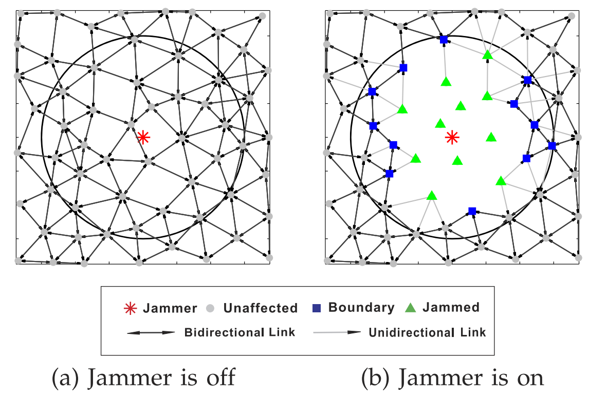
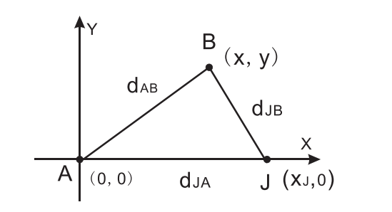
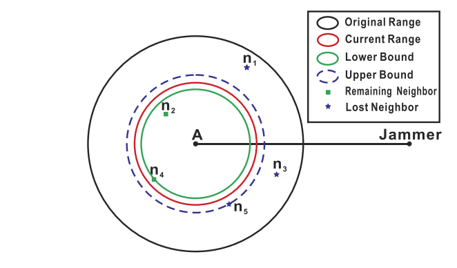
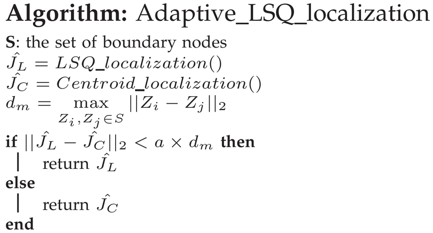
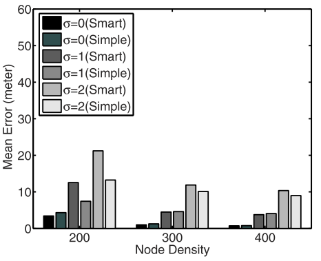
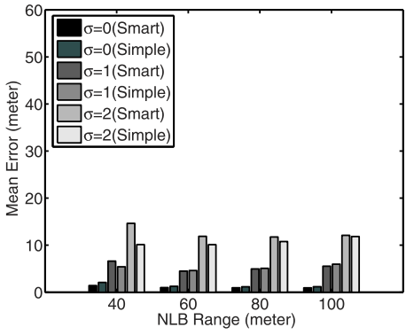
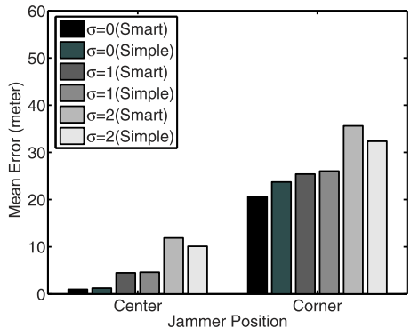

Created: 2017-11-26 周日 21:15
The threshold required to decode a signal successfully.
Consider the standard free-space propagation model, the received power is:

Consider the example illustrated in this figure: 
If B happens to be located at the edge of the hearing range of A, then we have:
Therefore, we can obtain the following formula:
The hearing radius of A can be estimated as the mean value of these two kind of bounds. 
The log-normal shadowing model captures both path loss versus distance along with the random attenuation due to blockage from objects.
Consider that there are m boundary nodes, the position of the jammer can be estimated by:
Combines the CL method with the LSQ algorithm. 
As N increases, the performance of the adaptive LSQ-based algorithm improves for all . 
As the jammer's NLB range increases, the accuracy of the estimated jammer's location does not change much. 
When the jammer is located at the corner, the mean estimation errors become around 30 m. 
#test{font-size:14px;}